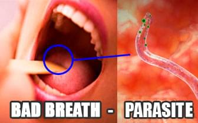
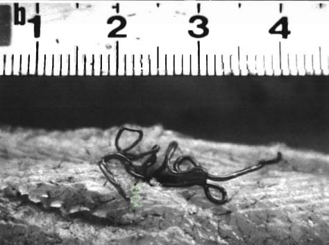
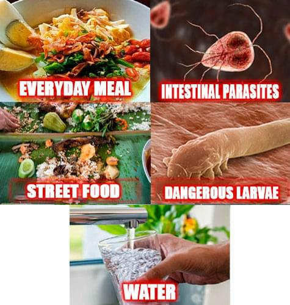

It started with a bad breath and almost led to the death of my beloved husband!
Department of Health warns: Over 82.7% of Philippines are infected with dangerous parasites without even knowing about it! It can happen to anyone. Please, take care of yourself and your loved ones.
Hello, everybody. I’m Jessica.
Do you know this terrible feeling when your loved one suffers from an unknown disease and you cannot help? Unfortunately, me and my family had to go through this terrible experience. Now I beg you to read my story and not repeat my mistakes! You still have a chance to save you family!
John and I have been living together for 24 years, and during that time we never quarrel. Our friends still call us "newlyweds". We had many plans ahead. And of course we had thought that nothing bad would happen.
It all started when my husband started complaining of bad breath. I also noticed that his mouth smells really bad lately. It smelled of rotten eggs. It was really strange because my husband always brushed his teeth 2 or 3 times a day. He also said that he felt very tired even after waking up. Any work took him a lot of energy and he quickly got tired.
In addition, he suffered from headaches and digestive problems. I used to work as a nurse in a hospital. So I advised my husband to visit a doctor. But doctor didn't found any problems. He was confused.
In few days, other worrying symptoms appeared..
My husband started getting flatulence, besides, he did not eat well and was very thin. Black circles appeared under his eyes and he looked very tired.
John complained of aching pains in the heart, liver and stomach. He was given a blood test and underwent a full examination of the body, but did not reveal anything.
Time passed, but John did not get better! Sometimes the pain disappeared, but then returned again!
I am ashamed to admit, but there was another very unpleasant symptom. Our intimate life has almost stopped. One day, my husband admitted that he had problems with an erection. It was just awful! My husband has always been a strong and energetic person. But now he has completely lost interest in life and in me. John was depressed and nothing pleased him.
Only after several months of expensive examinations, the doctors gave a diagnosis - a parasitic infection. About 67% of my husband’s body was infected with parasites. They were everywhere! I was shocked. Where could they come from? My house is always clean, I clean it 2-3 times a week. I buy only quality products and always clean them. I could not believe that all these symptoms were signs of a parasitic infection!
I kept thinking, HOW DID THIS HAPPEN? So, I took my husband's test and wrote a letter to the Laboratory of Parasitic Diseases, USA. They sent me a shocking reply:
"All your husband's problems are the first symptom of a parasitic infection. When infected by parasites, the body begins to slowly collapse, at first it is not clear, then it is clear. It all starts with bad breath in the mouth, flatulence, depression, headache, dark circles under the eyes, poor appetite, joint and muscle pain. For men, parasites cause prostatitis, impotence, dysfunction heart and liver disease. For women, parasites cause vaginitis, ovary swelling, urocystitis, ovarian fibroids development, polycystic ovary tumors, swelling of the kidneys, urinary tract and kidneys and also skin aging. For children, parasites cause acnes, eyes are always watery. Mostly ignoring such mild symptoms lead to the rotting internal organs leading to death".
850,000 people in Philippines die each year without realizing that the cause of their death is parasites. Invisible killers are everywhere, in fish, meat, water, vegetables, fruits that people buy in supermarkets or markets.
I began to find a solution. I almost went crazy because I could not calmly watch the person that I loved suffering right in front of my eyes. I almost did not sleep, read dozens of books, sought advice from colleagues. We tried dozens of drugs with nothing useful and the doctor could not do anything. His condition deteriorated. I found myself useless and blamed myself for not being able to save him.
We even tried folk remedies such as papaya seeds and lime potion!
In addition to the disease, we had another problem: our money was almost over. My husband could not work due to illness, but I had to look after him. We could not afford the expensive treatment that was offered to us in the hospital. Doctors needed 610,000 php to treat my husband! That was too much money for us! The chances of salvation faded every day.
When I thought everything was useless, I found something on the internet - Organic Teatox.
I found studies of this medicine. It said that more than 250,000 people tested it. And within two days they removed about 300 different types of parasites.
Poll: How did you remove the parasites:
Medicines
23%
Organic Teatox
67%
I'm still looking for a method
10%
At first, I was quite suspicious, but my husband's condition didn't get better so I decided to act. The product arrived within a day.
In the morning, I gave my husband 2 capsules of Organic Teatox. By afternoon, John began to feel much better. At first, he had an appetite and began to eat better. There was no rotting odor from his mouth! I was really surprised that Organic Teatox worked so effective and fast!
After a day, the liver and intestines have worked back to 65%, the kidneys and heartbeats work normally. After 3 days, my husband told me that, when there was no one in the room, he had an erection. Natural ingredients found in Organic Teatox are active in tissue regeneration, so that treatment is faster.
After 5 days, my husband was tested again in hospital. There were no signs of parasites in the body. Organic Teatox has washed out all parasite eggs and other things that harm the body in a just few hours. Thanks to the accumulation effect, Organic Teatox strengthens the immune system and protects cells from parasites. This helps avoid the possibility of being infected again for long periods of time. A week later, my husband completely recovered.
Later, I understood why I did not find Organic Teatox in the pharmacy. The reason is because this product is new and extremely effective (we tried it). Manufacturer fears that price will increases and fake products. Therefore, the product can only be purchased at the manufacturer's site.
I hope you will not make my mistakes! If only I immediately noticed disturbing symptoms (flatulence, bad breath in the mouth, poor erection or fever), then my husband would not have suffered for so long.
Now my whole family take Organic Teatox to prevent parasites, especially children. It is completely safe.
Please pay attention to your health and your loved ones! If you notice at least one of these symptoms: